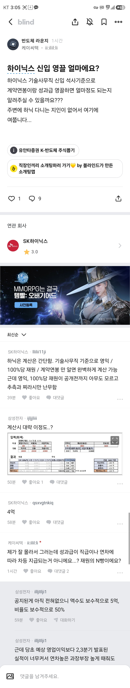
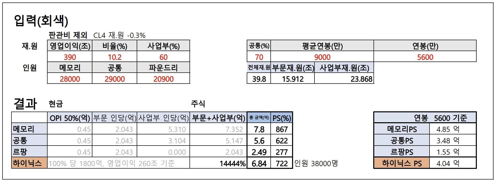

신입연봉 4억인것보다
영업이익이 390,000,000,000,000원인게 더 놀랍네


신입연봉 4억인것보다
영업이익이 390,000,000,000,000원인게 더 놀랍네
줴줴이야~
영업이익이 390,000,000,000,000,000,000,000,000,000,000,000,000,000,000,000,000원이라구??
이건.. 이 행성값이야..
고산공작니뮤ㅠㅠㅠㅠ 얼마전에 정주행 했는데 아그네스 그 쌍년 이쁘긴 하더라
4억이면 몇년마다 집한채씩 사겟다
세전이라 이제저기서 절반뜯김
와.. 지금도 역대급세수인데 성과급돌리면 세금 얼마나 걷힐려나
영끌4억 ㅋㅋㅋㅋㅋ
신입사원이 4억..
세금떼도 실수령 2억 ㄷㄷ
미쳤다리
사내 맞벌이 부부 같은 경우 10년만 같이 고생해도 서울 1티어 지역 입성 가능할듯
10년 동안 집값 그대로니?
10년동안 인센 저정도 나오는건 행복회로아님??
저거보다 더 나올수도 있다는거임ㅋㅋㅋ
역대 반도체 호황인데 여기서 더 영익이 오른다고? 혹시 근거가 있는 말이야?? 궁금해서
음?
저기에 그런 내용없어서 그거 빼고 단순계산한듯
일단 여태까지 저정도 안나왔어도 사내부부면 이미 번거 + 부모지원 등으로 신혼 초기에 10억은 있는 사람이 많고 10년동안 모으기만 하는게 아니고 대출껴서 갈아타기 하면 서울 1티어도 가능함
근데 너가 말하는 1티어가 내기준이랑 다르면 니말이 맞을지도
친구야 쟤내 내년 인센은 저거 두세배야
10억 근처 확정남
올해+4개월후면 다 퇴사할판에 뭔 10년ㅋㅋ
이천이나 청주 근처 회사 다니는 사람들은 알겠지만 주거형 오피스텔부터 아파트 전부 체감상 1-2년만에 30%이상 오름 ㅋㅋ
한국은행에서 두달 전 낸 보고서 보면 '수요견인 인플레이션' 에 대해 진지하게 걱정중임.
집같이 전체 물량에 비해 소수만 거래되는 재화는 수십채만 비싸게 거래되어도 전체 시세를 확 끌어올리는데
반도체 호황으로 풀린 돈이 부동산 포함한 물가 전반을 끌어올리는 인플레이션에 대한 우려 쎄게 하는중
이미 화성사업장 인근 상급지 조졌음 ㅋㅋㅋ
세금 아까우면 연금으로 일부 옴기면 되긴 함(나중에 연금수령할 때 세금계산함)
주가도 좀 올랴봐ㅏㅏㅏㅏㅏ
390,000,000,000,000
와 얼마나 행복할까
390조는 삼성이고 닉스는 200조 남짓이지
영끌6은 웁니다
배타고 선장해도 하이닉스 못이겨
우주해적 하면 이김
삼성하닉이 한국의 openai고 anthropic인데 이게 맞지 ㅋㅋ
지리네 ㅋㅋ
저 영업 이익을 올리고도 왜 주가가 쳐박는지가 더 공포 아니냐
갬동이 없다! 갬동이!!
입사한 년도에 갑자기 회사 매출이 입사전년 대비 2배, 다음해에는 4배로 뛰니까.
매달 성과급이 나와서 매달 월급을 두번씩 받았었음. 연말보너스 따로에.
그래서 아직도 3년차때 연봉이 최고점임.
부작용으로 회사인원 10% 정도가 건강에 문제 생겨서 쓰러지고 1~2달씩 입원했었음.
전원 사무직에 생산은 외주인대도 몸이 갈려나가더라.
그래서 로봇으로 모두 대체...
팹리스에 ODM만 하는 회사라, 일반회사 업무의 1/3만 하는데도 사람이 갈려나감.
로봇은 파운드리에 깔리지. 공정검사나, 조립쪽은 많이 자동화됨. 로봇팔이 나사조이고 그럼.
진짜 다른 세계네 ㅋㅋ
하이닉스가 사기인게, 매출만 오른게 아니라, 순수익률이 말도안되게 오름
저게 진짜 개사기인거임. 매출 폭등인데, 순수익률도 말이안되게 올라가버림.
SW회사에서나 나올법한 순수익률을 제조업에서 구현한거.
아무리못해도 몇년간 총 세후 10억이상 받을텐데
이거 부동산에 풀리면.. 고금리, 대출제한 무시하고 다시 강남쪽부터 폭등웨이브 갈수도
와 이제 세후로 의사만큼 받네
최태원이 아직 슼회장일수 있는이유= 하이닉스를 인수했다
태~원